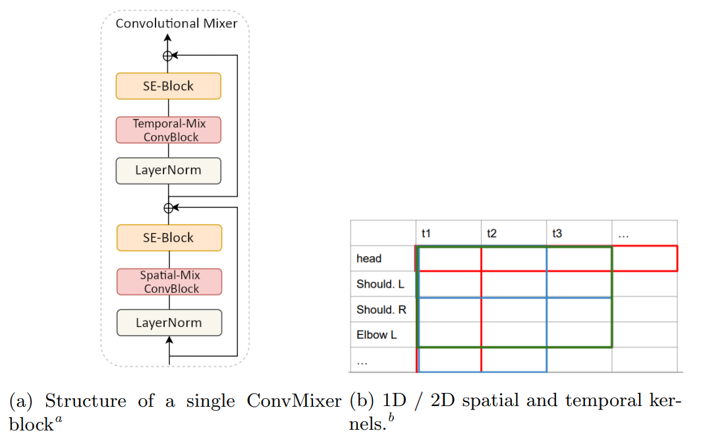

Human Pose Forecasting
Semester Project


Prediction on Human3.6m dataset
Prediction on our dataset
A human pose prediction model based on temporal convolution. Performs inference in an autoregressive way over time intervals of up to 2 seconds.
Abstract
In this work we address the problem of 3D human pose forecasting. Given a pose representation, our model, Convolutional Mixer, first applies the convolution in temporal dimension, learning the dependency between the target joint position at previous and future time frames. Then, it performs convolution in pose dimension to assess the relation between adjacent joints. We perform experiments on Human3.6m dataset and evaluate the importance of each parameter of our model. We also evaluate it on the custom dataset recorded in the AIS lab. Finally, we extend it to perform predictions in an autoregressive fashion, which allows us to perform inference over long time intervals. Our results show that the model performs well on various motion sequences, and generalizes to novel datasets and long predictions.
Method

Model architecture
- We build upon MotionMixer, which applied MLPs to an encoded pose vector. We replaced MLPs with convolutional layers and experimented with kernel sizes, number of layers, and ways to encode the pose vector.
- Our model can work with different methods of human pose representation, such as axis-angle or coordinate-based formats. We consider both local motion with respect to pelvis joint as well as global.
- We use 10 seed frames for prediction and output 10 subsequent frames. To generalize to longer sequences, we additionally consider autoregressive prediction with a sliding window for a total of 25 frames.
- We test our model on Human3.6m dataset and custom data captured by our tutor, which has a slightly different skeleton model.
Results on Human3.6m dataset
10 seed frames + 10 frames prediction
directions

discussion

smoking
waiting
walking

walkingtogether
Autoregressive: 10 seed frames + 25 frames prediction
directions
discussion
smoking
waiting
walking
walkingtogether
Results on custom dataset
10 seed frames + 10 frames prediction
singlePerson_000
singlePerson_001
2persons_001
2persons_002
Global movement: 10 seed frames + 10 frames prediction
singlePerson_000
singlePerson_001
2persons_001
2persons_002
Autoregressive: 10 seed frames + 25 frames prediction
singlePerson_000

singlePerson_001
2persons_001
2persons_002